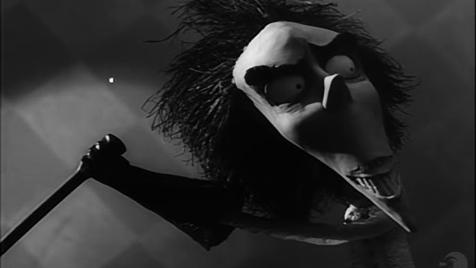
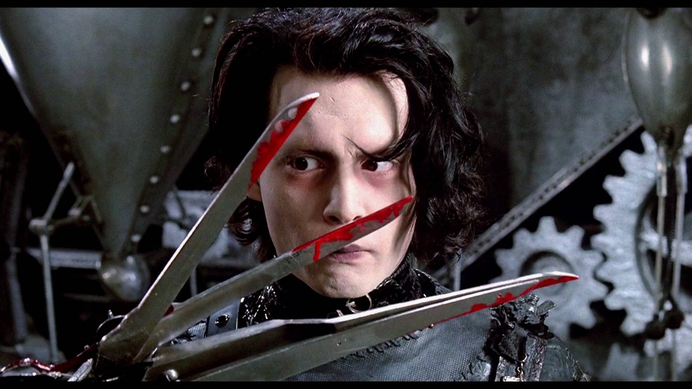
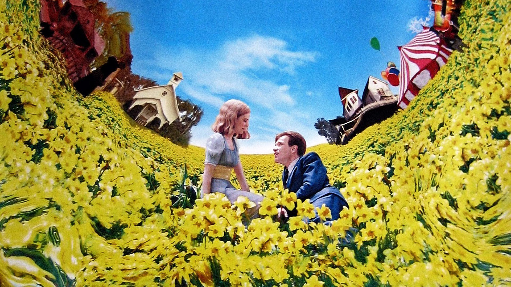

Cómo Tim Burton conquistó el mundo cinematográfico
La apasionante historia del director estadounidense


Pocos cineastas han logrado construir un universo tan reconocible como el de Tim Burton. Su estética oscura, su amor por los inadaptados y su talento para mezclar lo macabro con la ternura han hecho de él una figura imprescindible del cine contemporáneo. Desde sus primeros cortos hasta éxitos internacionales como Eduardo Manostijeras, Batman o La novia cadaver, Burton ha demostrado que el cine también puede ser un refugio para los raros, los solitarios y los soñadores. De un chico solitario a un narrador de mundos imposibles.
Timothy Walter Burton nació en 1958 en Burbank, California, una ciudad dominada por los estudios de animación de Hollywood. Paradójicamente, el pequeño Tim se sentía fuera de lugar en ese entorno luminoso. Prefería pasar horas dibujando criaturas sombrías y viendo películas de terror de serie B en lugar de jugar con otros niños. Esa sensibilidad diferente lo llevó a estudiar animación en el California Institute of the Arts (CalArts), donde fue reclutado por nada menos que Walt Disney Studios. Allí empezó su carrera profesional, aunque su estilo, demasiado peculiar y oscuro, no encajaba del todo con el espíritu colorido de Disney. Aun así, dejó huella con sus primeros cortos, Vincent (1982) y Frankenweenie (1984), que anticipaban muchos de los temas que más tarde definirían su obra.
● El salto al estrellato: de Beetlejuice a Batman
El gran punto de inflexión llegó en 1988 con Beetlejuice, una comedia macabra que rompió esquemas con su humor negro y su estética gótica. La película no solo destacó por su originalidad, sino también por la manera en que combinaba lo absurdo con lo terrorífico, creando un equilibrio perfecto entre lo hilarante y lo inquietante. La película fue un éxito de taquilla y le abrió las puertas a su siguiente gran reto: dirigir Batman (1989). Burton transformó la visión colorida y caricaturesca del superhéroe en algo más siniestro y adulto, influenciado por el expresionismo alemán, los cómics más oscuros y su propio imaginario personal. La película recaudó más de 400 millones de dólares y consolidó a Burton como uno de los directores más influyentes de Hollywood, dejando claro que su estilo único podía atraer tanto al público masivo como a los críticos especializados.

● La consagración del estilo Burton
Tras el éxito de Batman, Burton se permitió explorar su faceta más personal y artística, mostrando un lado más íntimo y emotivo en sus historias. Edward Scissorhands (1990), protagonizada por Johnny Depp y Winona Ryder, fue una fábula moderna sobre la diferencia, la belleza, la soledad y la aceptación, que mezclaba ternura y melancolía de manera inolvidable. La cinta se convirtió en un clásico instantáneo y marcó el inicio de una de las colaboraciones más icónicas del cine: la dupla Burton–Depp, que daría lugar a numerosos proyectos memorables. Durante la década de 1990, Burton continuó expandiendo su universo visual con películas como Pesadilla antes de navidad (1993), Ed Wood (1994) o Sleepy Hollow (1999), cada una mostrando su capacidad de reinventarse, su amor por lo artesanal y su talento para combinar lo fantástico con emociones profundamente humanas. Cada obra confirmaba su dominio del lenguaje cinematográfico y su habilidad para crear mundos que resultan tan extraños como encantadores.
● El sello Burton: gótico, poético y profundamente humano
Más allá de su estética gótica y su paleta de colores sombríos, lo que hace único a Tim Burton es su capacidad de empatizar con los marginados y los incomprendidos, convirtiendo lo “raro” en protagonista. Sus personajes —desde el niño pez de Big Fish hasta la novia cadáver— reflejan la fragilidad, la vulnerabilidad y la belleza de la condición humana, mostrando que lo diferente merece admiración y no rechazo. En su universo, lo “raro” no es algo que temer, sino algo que celebrar, y cada elemento visual y narrativo está pensado para reforzar esta visión. Sus colaboraciones recurrentes con Johnny Depp, Helena Bonham Carter y el compositor Danny Elfman han creado un estilo reconocible al instante, lleno de matices, simbolismo y teatralidad. La música de Elfman, con sus coros dramáticos y melodías melancólicas, es tan esencial para su cine como sus decorados torcidos o sus protagonistas melancólicos, consolidando un sello que combina lo visual, lo sonoro y lo emocional de manera única.
● Burton en el siglo XXI: entre la nostalgia y la reinvención
Ya entrado en el siglo XXI, Burton ha seguido reinventándose sin perder la esencia que lo caracteriza, adaptando su estilo a nuevas audiencias y formatos. Charlie y la fábrica de chocolate (2005), Sweeney Todd (2007) y Alicia en el País de las Maravillas (2010) lo reafirmaron como un maestro del cine fantástico, capaz de combinar narrativa, diseño visual y música de manera impecable. Más recientemente, con Dumbo (2019) y la serie Wednesday (2022) para Netflix, Burton ha sabido conectar con nuevas generaciones, reinterpretando clásicos y creando contenido que mantiene su identidad estética mientras dialoga con el lenguaje audiovisual contemporáneo y las expectativas del público actual. Cada proyecto muestra que su creatividad sigue intacta y que su visión sigue siendo relevante en un panorama cinematográfico cambiante.

● El legado de un visionario
Tim Burton no solo ha dirigido películas: ha construido un imaginario completo y reconocible que trasciende el cine. Su obra ha influido en la moda, la música, la animación y la cultura pop, dejando huella en cada disciplina que toca. Exhibiciones dedicadas a su arte han recorrido museos de todo el mundo, demostrando que su universo visual es tan valorado como su narrativa. En un Hollywood que a menudo apuesta por fórmulas seguras y convencionales, Burton ha demostrado que la diferencia y lo excéntrico pueden ser superpoderes que fascinan al público. Su cine sigue recordándonos que hay belleza en lo oscuro, esperanza en lo extraño y que cada historia contada desde la autenticidad puede convertirse en un clásico atemporal.
“No es malo ser diferente. A veces, eso es lo que te hace especial.”— Tim Burton